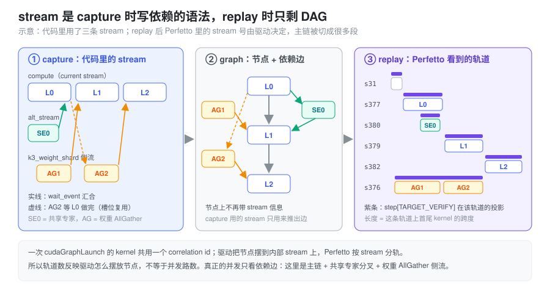
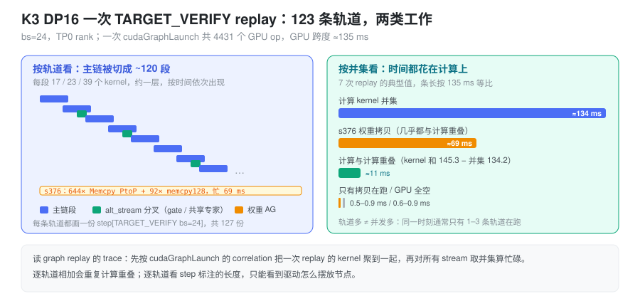

- decode 阶段开了 CUDA Graph，为什么 Perfetto 里一个
step[TARGET_VERIFY bs=24]会出现在上百条 stream 上？ - CUDA Graph 不是把所有 kernel 压到一条 stream 里了吗？
- 这么多 stream，意味着有这么多路并发吗？应该怎么读这种 trace？
问题：开了 graph，stream 反而变多了
一个常见的理解是：decode 阶段用 CUDA Graph 把一次 forward
的所有 kernel 打包成一个 cudaGraphLaunch，所以
GPU 上应该只看到一条 stream，kernel 一个接一个排下去。
打开 Kimi K3 DP16 decode（bs=24，TP0 rank）的 torch
profiler trace，看到的却是另一番景象：一次
TARGET_VERIFY 的 replay 里，4431 个 GPU op
分布在 123 条 stream
上；step[TARGET_VERIFY bs=24] 这个 GPU 标注在
127 条轨道上各画了一份，有的长 0.07 ms，有的长 116
ms。同一份 trace 里，graph 之外的 eager kernel 只落在 stream
31 和 87 两条上。
这里有两个问题要分开回答：
- 为什么 replay 出来的 kernel 会落到这么多 stream 上？
- 这么多 stream 是不是意味着这么多路并发，性能上要不要担心？
第一个问题的答案在 CUDA Graph 本身的模型里；第二个问题要回到 trace 上量。
抽象：stream 是 capture 时写依赖的语法，replay 时只剩 DAG
CUDA Graph 对“压缩”的那部分理解没错：它把 N 次 kernel
提交合成一次 cudaGraphLaunch，省掉的是 CPU
侧逐个 launch 的成本（见 Cuda
Graph）。但它压缩的是提交，不是执行顺序。
capture 的时候，代码照常往 stream 上提交 kernel，并用
wait_stream / record_event /
wait_event 在 stream 之间分叉、汇合。graph
从这些操作里推出的是一张 DAG：
- 同一条 stream 上的前后两个 kernel 之间连一条边；
- 一次
wait_event，在被等待的 kernel 和后续 kernel 之间连一条边。
推完之后，节点上就不再带 stream 信息了。capture 用的 stream 只是用来表达依赖的语法。NVIDIA 论坛上的回答说得很直接：用 stream 1 和 stream 2 capture 出来的图，执行时“永远不会真的跑在 stream 1 和 stream 2 上，这两条 stream 只用来抽取节点之间的依赖”（NVIDIA Developer Forums）。
replay 的时候，驱动把 DAG 的节点摆到自己管理的内部 stream 上执行，只要求满足依赖边。CUPTI 记录的是 kernel 实际所在的内部 stream，Perfetto 又按 stream 分轨，于是：
- 一条没有分叉的链，通常留在同一条内部 stream 上；
- 遇到分叉或汇合，后面的节点可能被摆到另一条 stream 上。一条串行的主链因此被切成很多段，每段一条轨道。
第二条是在 trace 里观察到的规律，CUDA 文档没有承诺具体怎么摆放。可以依赖的只有一点：轨道数反映的是驱动怎么摆放节点，不等于并发路数。真正的并发由依赖边决定。

Perfetto 里的轨道和标注是怎么来的
torch profiler 导出的 trace 里，GPU 侧有三类和这个问题相关的记录：
| 记录 | 分轨依据 | 在 graph replay 下的表现 |
|---|---|---|
kernel / gpu_memcpy |
args.stream，也就是 kernel 实际所在的
stream |
落在驱动选的内部 stream 上，不是 capture 时的 stream |
cuda_runtime 的
cudaGraphLaunch |
CPU 线程 | 一次 replay 只有一条；它的 correlation
被这次 replay 的所有 kernel 共用 |
gpu_user_annotation |
每条有 kernel 的 GPU stream 各一份 | CPU 上的 record_function 范围投影到
GPU，每条轨道上从这段时间里第一个 kernel 画到最后一个
kernel |
最后一行解释了“上百个
step[TARGET_VERIFY bs=24]”：step
只有一个，但它在每条轨道上各投影一份。在 K3 这份 trace
里核对过，每份标注的两端都正好贴着该轨道上首尾 kernel
的起止时间。所以标注的长度没有“这个 step 在这条 stream
上花了多久”的含义：
- 只跑了 17 个 kernel 的短轨道，标注长约 2 ms；
- 权重拷贝轨道从头忙到尾，标注长 116 ms；
- 有一条轨道上的 24 个 RMSNorm 从 3.4 ms 一直散落到 131 ms，标注也跟着拉到 108 ms，中间大部分时间这条轨道是空的。
要把一次 replay 的 kernel 聚到一起，应该用第二行的
correlation：先找到
cudaGraphLaunch，再取所有同
correlation 的
kernel。不要按轨道或按标注聚。
实测：K3 DP16 一次 TARGET_VERIFY replay
数据来自
profile_dp16/d_bs24_100k（DP16，单卡
bs=24，全局 384），按 correlation 取出 7 次
4431-op 的 replay 统计。
轨道上有什么。 按每条 stream 上的 kernel 数分组，结构很清楚：
| 轨道 | 数量 | 内容 |
|---|---|---|
| stream 376 | 1 | 644 次 Memcpy PtoP (Device -> Device) +
92 次 memcpy128，忙约 69 ms。每次 PtoP 约 78
MB、约 715 GB/s，是权重 AllGather |
| 主链段 | 约 120 | 每段 17、23 或 39 个 kernel，按时间依次出现。例如 stream
413 上依次是
quant、gemm、situ_and_mul、add3、attn_res、RMSNorm、mla_prepare，最后是
1247 us 的 MLA
decode。一段大约一层的量，但段的边界不在层的边界上 |
| 其他 | 少量 | 开头的 embedding、AllReduce，以及上面那条散落的 RMSNorm 轨道 |
有多少真正的并发。 把这次 replay 的所有 op 按时间扫一遍，统计同一时刻有几个 op 在跑：1 个占 46.4%，2 个占 48.0%，3 个占 4.1%，4 个占 0.9%，0 个占 0.6%。123 条轨道里，任意时刻只有一到三条在干活。
时间花在哪。 每次 replay 的 GPU 跨度约 135 ms：
| 指标 | 时间 | 含义 |
|---|---|---|
| 计算 kernel 的并集 | ≈134 ms | 除权重拷贝外，任意 kernel 在跑的时间 |
| 计算 kernel 时长之和 | 145.3 ms | 比并集多 11 ms，是计算与计算的重叠（alt_stream 分叉） |
| stream 376 的权重拷贝 | ≈69 ms | 几乎全部与计算重叠 |
| 只有拷贝在跑 | 0.5–0.9 ms | 拷贝没被计算盖住的部分 |
| GPU 全空 | 0.6–0.9 ms |
所以，并发有两类：一类是主链和权重 AllGather 侧流，另一类是主链和 MoE 里的 alt_stream 分叉。轨道数本身对性能没有影响，权重拷贝也基本藏住了。一步的时间由主链计算决定，和 stream 怎么摆放无关。

在 SGLang 中：分叉和汇合从哪来
K3 的 decode forward 里，有两处代码在 capture 时制造分叉。它们是轨道被切碎的来源，也正好对应上面两类并发。
权重 AllGather 侧流。 开了
SGLANG_ENABLE_K3_WEIGHT_SHARD=1 后，DP16
每张卡只存非专家权重的 1/8，每层前要从同节点的 8
张卡把完整权重拼回来（srt/sharding.py）。几个关键点：
- AllGather 跑在一条单独的侧流上，由
get_weight_sharding_side_stream()从 RuntimeContext 租用，名字是k3_weight_shard； - 走的是 NCCL 的 Copy Engine 算法，通信组限制在一个 NVLink
域内的 8 张卡（
_K3_CE_GROUP_SIZE = 8）。所以在 trace 里它显示为Memcpy PtoP (Device -> Device)，而不是ncclDevKernel_*； WeightShardForwardPlanner做深度为 1 的预取：kimi_k3.py的层循环在跑第 i 层前调用maybe_dispatch(i + 1)，提前发出下一层的 AllGather，并用上一层的_weight_shard_done_event作为 gate，保证 staging 槽位不会被提前覆盖。
FlatAGScheduler.launch()
里的分叉和汇合，就是图里的依赖边：
stream.wait_stream(cur) # 分叉：侧流等主链已提交的工作
with torch.cuda.stream(stream):
dist.all_gather_into_tensor(...)
self._shared_event.record(stream)
# 用到这一层权重前，prepare_layer_weight_shard_forward() -> wait_ready_once():
torch.cuda.current_stream().wait_event(self._shared_event) # 汇合每个做了 weight shard 的层，主链都要等一次这个 event。主链段的数量和层数同一量级，推测这些汇合点就是主链换轨道的地方。
MoE 的 alt_stream。
kimi_k3.py 的 MoE 层在两处用
alt_stream：
- front overlap：router gate 和 TopK 放到
alt_stream，主链同时算 latent down-proj（routed_expert_down_proj），然后current_stream.wait_stream(self.alt_stream)汇合； - shared expert
overlap（
_sbo_shared_overlap）：共享专家放到alt_stream上，与 routed 专家的 DeepEP 通信和 GEMM 重叠，在尾部汇合。
trace 里 7.1 ms 附近能直接看到这种重叠：一条轨道在跑
deep_ep::internode_ll::dispatch，另一条同时在跑
quant、gemm、situ_and_mul。11 ms
的计算重叠应该主要来自这类分叉，没有逐个核对。
对照 eager。 同样的代码不进 graph
时，kernel 落在 Python 实际提交的 stream 上，Perfetto
只会显示主
stream、alt_stream、k3_weight_shard
这几条。这份 trace 里的 eager kernel 只出现在 stream 31 和
87 上，可以作为对照。
怎么读 graph replay 的 trace
- 按
correlation聚合一次 replay。 找到cudaGraphLaunch，取所有同correlation的 GPU op，不要按轨道或 step 标注去圈。 - 忙碌时间取所有 stream 的并集。 把各轨道的 kernel 时长相加，会把重叠部分算两次。上面的例子里，相加是 145.3 ms，并集是 134.2 ms。
- 看并发，就看同一时刻有几条轨道在跑，不要看轨道总数。
- step 标注的长度只说明这条轨道上首尾 kernel 隔了多远。 想知道一步多长，看这次 replay 首个 kernel 到最后一个 kernel 的跨度。
- 拷贝藏没藏住，看“只有拷贝在跑”的时间，不要看拷贝流本身有多忙。69 ms 的拷贝只露出不到 1 ms。
小结
CUDA Graph 合并的是提交，不是执行顺序。capture 时代码里的
stream 和 event 只用来推出依赖边，replay 时驱动按 DAG
把节点摆到自己的内部 stream 上，Perfetto
照实分轨，于是一条主链会在每个汇合点换一次轨道，最终散成上百条，每条都带一份
step 标注。读这种 trace 时，把轨道当作驱动的摆放结果：按
correlation 圈出一次 replay，对所有 stream
取并集算时间，用同一时刻的并发数来判断有没有并行。K3 DP16
decode 里的 123 条 stream 对应的只是两类真实的并发，权重
AllGather 侧流和 MoE 的 alt_stream
分叉，一步的时间几乎全花在主链计算上。